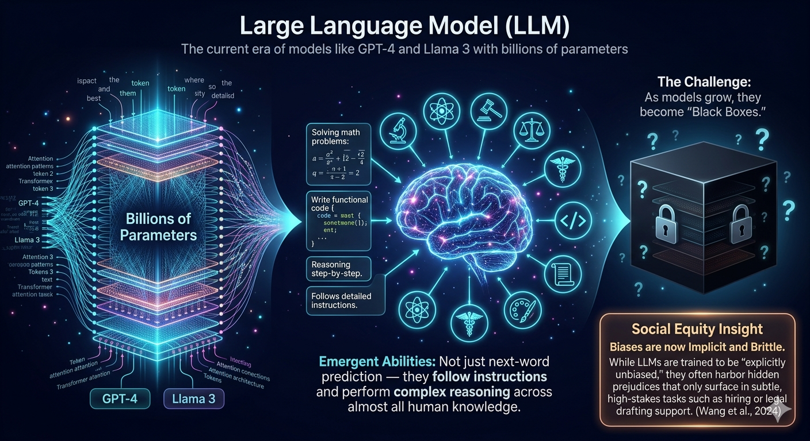

Large Language Model (LLM)
Refer to the Research Team,
Wang et al. (2024)
state that
The current era of models like GPT-4 and Llama 3, characterized by billions of parameters. The
development is from small to large foundation model.
Mechanism: models exhibit Emergent Abilities. They don't just predict the
next word; they follow instructions and perform complex reasoning across almost all human
knowledge.
The Challenge: models grow, they become "Black Boxes."
Social Equity Insight: are now Implicit and Brittle. While LLMs are trained
to be "explicitly unbiased," they often harbor hidden prejudices (Implicit Bias) that only
surface in subtle decision-making tasks, such as hiring or legal drafting support.
